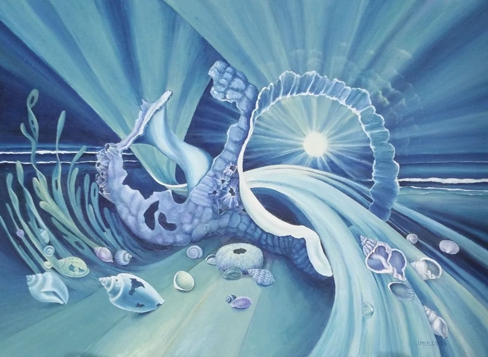

Select the picture to see it larger.
On a wall

Shown at its real size, 27 × 37 cm. Above a cabinet about 90 cm wide. The room is an illustration.
Moon, Sea and Shells
- Medium
- Oil on canvas board
- Size
- 27 × 37 cm
- Year
- 2017
- Price
- £500
- Catalogue no.
- 50
This painting started as a study of a broken shell but developed, as so many of my paintings do, into a composition of shells, seaweed and moonlight, creating patterns and shapes in and around the central area.
Ask about this paintingUK only. Collection from Nantwich is free; UK postage is quoted when you enquire. How buying works